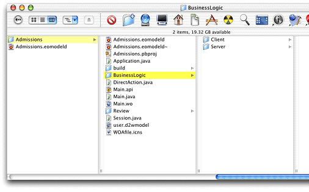

Project Builder stores most of a project's files at the top level of the project directory in the file system even though it organizes files in logical groupings inside the project itself. It's a good idea to separate your business logic files from other WebObjects files both in the project directory in the file system and in logical groupings inside the Project Builder project.
Follow this step to create a BusinessLogic directory
with subdirectories in the file system, and to create a BusinessLogic group
in the project:
Create the following directories at the top level of your project directory (do this in the file system, not in Project Builder): BusinessLogic BusinessLogic/Client BusinessLogic/Server
The directory structure should look like Figure 5-8.
Figure 5-8 Directory structure for custom business logic
